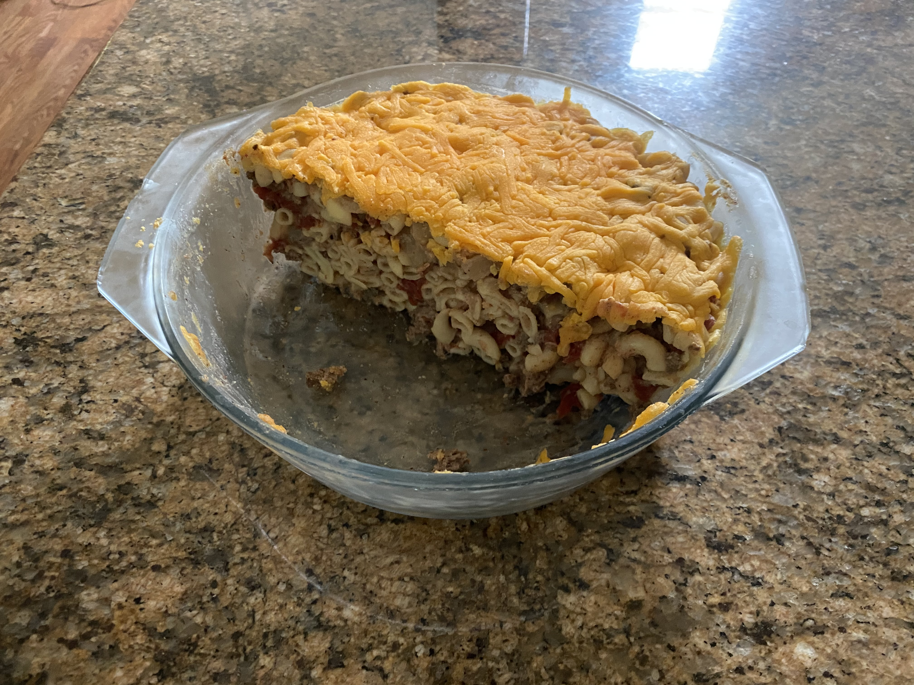

Hamburger Casserole

Description
This hamburger casserole recipe produces a quick and easy
one-pan dinner that somewhat resembles a simplified goulash.
Featuring hamburger, elbow macaroni, tomates, and cheese,
it is sure to become a comforting dinner-time classic!
Ingredients
- 1 pound ground beef.
- 1 small onion, diced (if desired)
- 16 oz elbow macaroni
- 1 can diced tomatoes
- 1 can cream of mushroom soup
- Salt and pepper to tast
- 2 cups shredded cheddar cheese, sharp
Steps
- Preheat oven to 375 degrees
- Prepare macaroni according to instructions on box.
- Brown ground beef and onion in a ten-inch skillet over medium-high heat, drain.
- Add tomatoes and soup to the hamburger in the skillet.
Bring to boil.
- Reduce heat and simmer 5-10 minutes or until macaroni reach “al dente”.
- Drain pasta and stir into skillet.
- Empty skillet into casserole dish, top with cheese
and bake 10-15 minutes or until cheese is melted and bubbly.
- Remove from oven. Serve immediately.